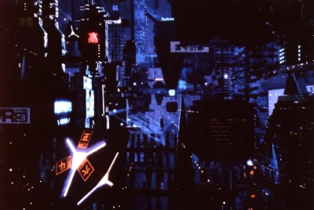

Le contexte
Etats-Unis d'Amérique, année 2020. Après le crack boursier de 1994, ce pays devait connaître des changements radicaux qui allaient le défigurer à jamais. Emeutes, criminalité, loi martiale, catastrophes naturelles, précarité et épidémies causent la mort de cent millions de personnes dans les six années qui suivirent. Deux guerres en Amérique du Sud contre les trafiquants de drogue sont des échecs qui achèvent de décridibiliser le gouvernement américain. Celui-ci perd de son influence et voit plusieurs états comme le Texas, la Californie ou le Nevada déclarer leur indépendance. Le pouvoir des corporations augmente et l'on voit les plus importantes lever des forces militaires pour assurer leur propre sécurité et défendre leurs intérêt. Entre 2004 et 2007, deux guerres corporatives secouent l'économie mondiale. De plus en plus d'affaires de génocide, crime organisé, escroqueries de masse, espionnage ou dépossession liés à l'activité corporatistes apparaissent. Au Etats-Unis ou au Japon, le gouvernement est le jouet des intérêts commerciaux des corporations, qui tirent les ficelles de la classe politique.
En 2020, la population américaine se concentre dans les villes, soumises à la surpopulation, à la criminalité omniprésente et à la pollution. Les campagnes sont de vastes friches habitées par des tribus de nomades en rupture avec la société, ou sont le fief des mégacorporations agricoles qui surveillent jalousement leurs terres cultivables.
A l'étranger, le pire côtoie le meilleur. L'Europe unifiée impose sa monnaie, l'eurodollar, comme devise principale de l'économie mondiale. Elle reste, à l'exception de l'Angleterre qui suit le chemin des USA, un havre de technologie, de profit et de stabilité. L'Australie suit son exemple. Le Japon suit une voix identique, étant le fer de lance de la recherche scientifique mondiale. Mais son gouvernement est manipulé par la mafia et les corporations.
La Russie reste engoncée dans les conflits armés et la mainmise de la pègre sur l'économie locale. Un gouvernement néo-communiste est revenu au pouvoir, et prône l'immobilisme et l'isolationisme. L'Amérique du Sud fut longtemps un terrain de conflits armés qui l'ont profondément marqués. Néanmoins, certains pays comme le Brésil relèvent la tête et semblent sortir de la misère. L'Afrique est un lieu d'échange privilégié de l'Europe et bénéficie de la richesse de cette dernière. La Chine elle aussi rationalise sa productivité et s'impose comme une puissance industrielle avec laquelle il faut compter.
La conquête spatiale bat son plein, avec des bases sur la Lune et sur Mars ainsi que de nombreux satellites habitables principalement détenus par les corporations européennes.

La technologie
Loin d'être handicapée par l'effondrement de l'économie, les découvertes scientifiques ont littéralement explosé. Des avancées fulgurantes ont été faites dans des domaines comme la médecine, la micro-mécanique et l'informatique. Les aboutissements de ces progrès sont la nanotechnologie (micro-robots injectés dans le corps humain), la cybertechnologie et les réalités virtuelles.
La cybertechnologie consiste à équiper son corps d'implants et de bénéficier ainsi d'une plus grande force, résistance, adaptivité, rapidité, etc... La cybernétique poussée à son extrême est le remplacement corporelle intégral, qui ne conserve de l'être humain d'origine que son cerveau, le reste étant un corps de synthèse. Mais attention, on n'utilise pas la cybernétique sans risques : il est de notoriété public que l'adjonction d'implants déshumanise leur porteur et peuvent le transformer rapidement en un dangereux déséquilibré. Ce symptôme porte le nom de "cyberpsychose".
Le monde de l'informatique est présent partout dans cyberpunk 2020. L'exemple le plus aboutit de l'omniprésence des réseaux informatiques est la matrice, une copie informatique en trois dimensions du monde réel, qui permet aux accros des mondes virtuels, les netrunners, d'agir sur le mode réel en se déplaçant à la vitesse d'une impulsion électrique dans les mailles du réseau et d'interagir avec lui par l'intermédiaire de toutes les machines et mécanismes qui y sont connectés. Mais le réseau n'est pas un endroit sûr, et ceux qui connectent directement leurs neurônes à la matrice risquent de se faire griller la cervelle, si par malheur ils venaient à se faire détecter dans une forteresse de données corporatiste protégée par les programmes tueurs connus sous le nom de "Black Ice".

Les personnages
Les joueurs incarnent dans ce jeu des "cyberpunks". Gangsters, flics, détectives, netrunners, rockers ou techies, ils ont tous en commun le goût du risque, la volonté de sortir du lot et de survivre dans ce monde hostile. La cybernétique, les armes à feu, l'argent, le charisme, la renommée, le monde virtuel, la technologie ne sont des moyens possibles pour parvenir à leurs buts. Quels sont ces buts ? libre à eux de s'en fixer. Mais le vrai cyberpunk doit garder plusieurs choses à l'esprit, à tout moment :
- Réfléchir vite et bien. Si vous êtes lent, vos ennemis ne le sont pas.
- Vivre à la limite : ne pas végéter, surfer sur la vague du progrès et de la mode. A Cyberpunk, il faut paraître avant d'être, sembler bon plutôt que l'être réellement. Si tu te fonds dans la masse tu meurs.
- Faire changer les choses : les gouvernements, les corporations, la pègre sont autant d'acteurs qui ont fait du monde ce qu'il est et qui n'ont pas intérêt à le voir évoluer. Mais la révolution Cyberpunk peut miner leur projets en sappant leurs travaux de l'intérieur. En tant que cyberpunk, vous êtes là pour faire changer les choses.
- Mais rappelez-vous, dans Cyberpunk votre but n'est pas de sauver l'humanité, mais de vous sauver vous-même.
Le style
Cyberpunk 2020 est un jeu de rôle d'ambiance, qui compte parmi les jeux les plus difficile à maîtriser ; malgré la relative simplicité des règles, le maître de jeu doit assimiler et construire partiellement un univers futuriste qui n'est qu'une projection dans un futur proche de notre société. C'est un monde glauque, dangereux, ou les paillettes et le luxe côtoient la misère et le monde de la rue.
Dans Cyberpunk, toute vérité et susceptible d'être remise en question, tout allié potentiel peut cacher un traître, tout ennemi peut avoir un bon fond et un endroit apparamment sûr dissimuler un piège.
Pour que ce monde soit crédible, il faudra au MJ une imagination débordante qui sera mise à l'épreuve chaque jour. Il faut sans cesse surprendre, tromper, prévoir, manipuler pour bien maîtriser Cyberpunk.
Le style Cyberpunk n'est pas un simple déballage de technologie, d'armement et de scènes d'action, mais une réelle expérience de vie dans un futur qui est peut-être déjà le nôtre.